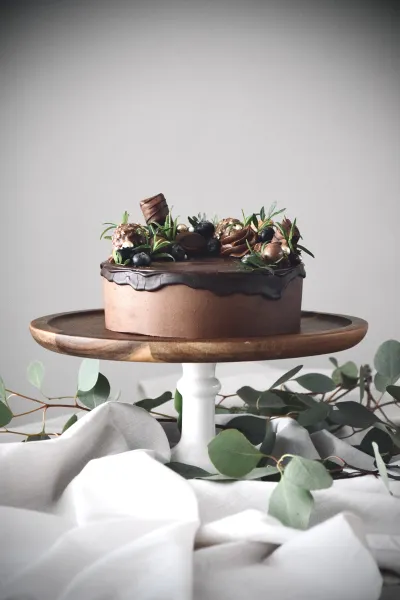
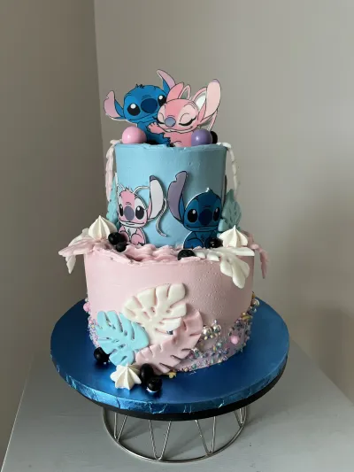
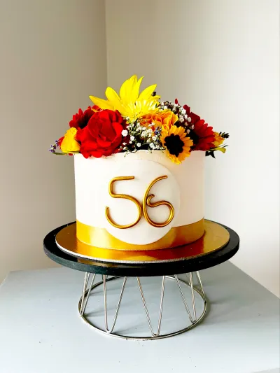

Małe torty klasyczne

Doskonały wybór na spotkania z rodziną lub ze znajomymi,
sprawdzi sie na niedzielne popołudnie przy kawie, imieniny, rocznice
czy inne domowe wydarzenia
Zapraszam do spróbowania, na poczatek dostępne w 4 wariantach – to klasyka,
ale w wersji dopasowanej do dzisiejszych oczekiwań!
Torty artystyczne

Torty artystyczne to połączenie smaku, rzemiosła i wyobraźni.
Każdy powstaje ręcznie, z dbałością o detale i przy użyciu najlepszych składników.
Tworzę unikatowe dekoracje, które wymagają precyzji i wielu godzin pracy.
Efekt? Torty, które zachwycają wyglądem i smakiem oraz pozostają w pamięci na długo.
Torty okolicznościowe

Tworzę torty na zamówienie – w wybranym smaku i stylu, dopasowane do okazji: urodzin, ślubu, komunii czy chrzcin.
Każdy tort to ręczna robota z dbałością o detale i elegancką dekoracją.
Dekoracje są delikatne, i dopasowane do wybranego motywu, tak aby podkreślały charakter wyjątkowej okazji.
Ma być pięknie, z charakterem i pysznie – i tak właśnie jest.